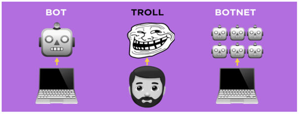
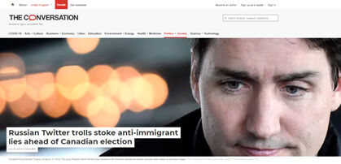

За полазнике
За тренере
За полазнике
За тренере
Модул 4: Улога интернета и друштвених мрежа у настанку информационог загађења
Опис модула
Основни циљ овог модула је да објасни улогу интернета и друштвених мрежа у стварању информационог загађења и веродостојности корисника на мрежи.
Секундарни циљ је да усмери тренере који желе да користе садржај овог модула за обуку својих полазника.
Овим циљевима представљен је утицај интернета и друштвених мрежа на информационо загађење, заједно са смерницама о томе како да се предмет предаје.
Полазници који успешно заврше овај модул моћи ће да:
- разумеју улогу интернета и друштвених мрежа у стварању информационог загађења
- препознају веродостојност корисника на мрежи
- препознају неаутентична понашања на мрежи
- дефинишу и разликују тролове, ботове и киборге
- разумеју мотиве који стоје иза неаутентичних онлајн активности
Поред тога, тренери који успешно заврше овај модул, моћи ће са већим разумевањем да подучавају о улози интернета и друштвених мрежа у стварању информационог загађења и поузданости корисника на мрежи.
Структура модула
Овај модул се састоји из следећих целина:
- Опис модула (циљеви, опис садржаја и исходи учења)
- Структура модула
- Смернице за полазнике
- Смернице за тренере (како се припремити, методе које треба користити и савети за тренере)
- Садржај (материјал за учење и вежбање)
- Квиз
- Референце (цитирани извори, препоручени извори и видео-записи)
Главни циљеви модула, опис садржаја и исходи учења објашњени су у делу Опис модула. Смернице за полазнике укључују упутства и сугестије за полазнике. Смернице за тренере воде тренере кроз различите фазе обуке и дају савете који би могли да буду корисни током предавања предмета. Садржај обухвата све материјале за учење и вежбања везана за садржај. Квиз укључује питања са вишеструким избором и питања на која се одговара са тачно или нетачнокако би полазници тестирали свој напредак. Одељак Референце обухвата списак извора цитираних у садржају модула и листу додатних извора и видео записа који се препоручују за читање и гледање како би се проширило знање о овој теми.
Смернице за полазнике
Од полазника се очекује да прочитају текст, пажљиво проуче дате примере, погледају препоручене видео-записе и ураде вежбања. Они могу да консултују предложене ресурсе за додатне информације. Након проучавања садржаја, полазницима се препоручује да ураде квиз како би проценили свој напредак. Уколико је потребно, могу поново проучити материјал за учење.
Смернице за тренере
Смернице за тренере укључују сугестије и савете о томе како да користе садржај овог модула за обуку полазника.
Припрема
Припремите презентацију (Пауерпоинт/Прези/Канва) која је обогаћена визуелним материјалима (слике и видео клипови) и јасним примерима. Примере и вежбања у овом модулу прилагодите темама којe су познатије конкретној циљној групи. Одабир локалних примера (специфичних за земљу) у вези са актуелним или добро познатим питањима помаже да се поента (суштина) јасније илуструје и додатно привуче пажња полазницима. Што су примери познатији и популарнији, то ће порука бити боље пренета.
Почетак
Како бисте увели полазнике у тему, на почетку можете користити кратак квиз (3 до 5 питања) направљен у Кахуту или им поставити питања путем Ментиметар апликације. Поменути квиз и питалице се могу користити као мотивационо средство и средство за проверу постојећег знања полазника о овој теми. Питања, на пример, могу бити: Шта је трол? Шта је бот?
Методологија
Током обуке могу се комбиновати различите наставне методе:
- Предавања
- Дискусије
- Рад у групама
- Самопроцењивање
Савети за тренере
Загревање
Ефикасан начин укључивања полазника и утврђивања заједничких очекивања о томе шта ће научити јесте постављање неколико прелиминарних питања о овој теми. Ово се може урадити кроз групни рад, тако што ћете замолити полазнике да дискутују и прикупе идеје, или кроз индивидуални рад, тако што ћете замолити сваког полазника да напише своје идеје на самолепљивим папирићима. Активност се може спровести на следећи начин:
- Питајте полазнике да ли су икада наишли на неаутентичну активност на друштвеним мрежама. Зашто мисле да је то било неаутентично?
- Позовите полазнике да разврстају дате примере и објасне на који начин се разликују.
Представљање циља лекције
Циљ лекције треба да буде јасан (објаснити улогу интернета и друштвених мрежа у стварању информационог загађења и поузданости корисника на мрежи). После питања за загревање лакше ћете разјаснити циљеве.
Представљање садржаја лекције
Приликом представљања садржаја водите рачуна о интеракцији са полазницима и подстакните их на активно учешће.
- Пре него што дате дефиницију тролова, ботова и киборга, замолите учеснике да осмисле своју дефиницију ових појмова.
- Приликом представљања уобичајених облика неаутентичних активности и налога, замолите учеснике да дају примере из стварног живота. Продискутујте да ли дати примери припадају или не категорији о којој говорите.
- Када дајете примере, изаберите оне из стварног света и сазнајте што више информација о том конкретном случају који износите како бисте полазницима пружили више детаља уколико вас питају.
- Како бисте избегли забуну, када бирате примере, уверите се да они у потпуности одговарају дефиницији категорије коју обрађујете.
- Створите прилике за практичне вежбе за полазнике кад год је то могуће.
Закључак
Направите кратак резиме лекције и поставите неколико питања која ће вам помоћи да истакнете најважније поруке које желите да пренесете.
Следеће питање може да вам помогне:
- Питајте полазнике како би реаговали када посумњају на неаутентичну активност.
Када долазите до закључка, побрините се да полазници разумеју да постоје лажни кориснички налози на друштвеним мрежама и скривене намере (најчешће манипулација) иза неаутентичних активности.
Садржај: Улога интернета и друштвених мрежа у настанку информационог загађења
Увод
Како појава интернета, тако и технологија друштвених мрежа довеле су до фундаменталних промена у начину на који информације настају, саопштавају се и дистрибуирају. Широко доступни, јефтини и софистицирани алати и технологије за уређивање и објављивање олакшали су свакоме креирање садржаја и брзо размењивање информација. Сходно томе, данас су мисинформације и дезинформације нашле нови канал (Wardle & Derakhshan, 2017, стр. 11-12; Tandoc, Lim & Ling, 2018, стр. 139).
Данас се променио не само начин на који се вести дистрибуирају, већ и како оне изгледају. Твит, који има највише 280 карактера, сада се сматра вешћу, а посебно Твитер је постао платформа за брзо ширење ванредних вести. Фејсбук је још једна друштвена мрежа која је постала место где корисници производе, конзумирају и размењују вести, заједно са личним објавама и фотографијама (Tandoc, Lim & Ling, 2018, стр. 139).
Све онлајн платформе, посебно друштвене мреже, пружају простор неновинарима да дођу до публике, другим речима, пружају могућности за грађанско новинарство. Неновинари су данас почели да се баве новинарском делатношћу (Robinson & DeShano, 2011, стр. 965). Они преко својих налога на друштвеним мрежама објављују информације, фотографије и видео-записе о најновијим вестима којима су присуствовали (Jewitt, 2009, стр. 231).
Друштвени медији обликују медијски пејзаж на неколико начина. Прво, садржај новинских агенција се приказује на једној локацији, па корисници више не морају да бирају извор вести; уместо тога бирају саму причу (Messing & Westwood, 2014, стр. 1044). Извор информација је нејасан зато што вести/информације брзо путују од једне до друге особе или канала (Tandoc, Lim & Ling, 2018, стр. 139). Друго, одобравање и друштвене препоруке утичу на избор садржаја (Messing & Westwood, 2014, стр. 1044). Популарност игра важну улогу у ширењу садржаја. Лајкови, дељења или коментари покрећу додатне лајкове, дељења или коментаре (Thorson, 2008, стр. 475).
Поред тога, за разлику од старих информативних медија, на друштвеним мрежама не постоји етички кодекс због дељења изманипулисаног садржаја (Tandoc, Lim & Ling, 2018, стр. 144-145) и постоје потешкоће (које повремено захтевају стручност) у верификацији информација различитих формата као што су фотографије и видео-записи.
Мисинформације и дезинформације су постојале и пре појаве штампе, али је интернет дозволио да се неистине, теорије завера и претеривања шире брже и даље него икад (Klepper, 7. фебруар 2020).
Веродостојност онлајн корисника
Веродостојност корисника онлајн заједница је још један проблем (Ortega, Troyano, Cruz, Vallejo & Enriquez, 2012, стр. 2884). Сви алати, као и таленат за њихово коришћење, данас су на продају. Свако може да купи хиљаде налога на друштвеним мрежама или милионе имејл адреса, ангажује писце (плаћене објављиваче) који ће допринети да се пропагира било која порука или идеологија у великим размерама (Filloux, 2017).
Постоје компаније и појединци који отворено продају Твитер, Фејсбујк и Јутјуб пратиоце, али и интеракције, ретвитове и дељења по разумним ценама (Barojan, November 5, 2018).

Извор: Barojan, 5. новембар 2018
Друштвене мреже се све више користе за ширење лажних тврдњи и поларизацију људи око контроверзних питања. Киборзи, тролови и ботови у великој мери доприносе информационом загађењу пунећи интернет дезинформацијама (Klepper, 7. фебруар 2020).

Source: Barojan, 5. новембар 2018
Тролови и фарме тролова (енг. Trolls аnd Troll Farms)
Реч трол се односи на људе који намерно иницирају сукобе на мрежи или вређају друге кориснике како би одвукли пажњу и подстакли поделе објављивањем провокативних постова или постова који нису повезани са темом у онлајн заједници или друштвеној мрежи (Barojan, 5. новембар 2018; Wardle, 2018). Циљ је испровоцирати емоционалну реакцију код других и избацити дискусију из колосека, понекад ради сопствене забаве, а понекад као део координисане кампање (Klepper, 7. фебруар 2020). Организована група интернет тролова се зове фарма тролова или фабрика тролова.
Тролови су понекад плаћени за ширење информација. Они могу створити значајан (негативан или позитиван) ефекат на онлајн заједнице (Chen, Wu, Srinivasan & Zhang, 2013). Пропаганда креирана на овај начин често је заснована на чињеницама, али укључује пристрасност која промовише одређени производ, страну или перспективу. Циљ таквог мешања вести и мишљења је често убеђивање, а не информисање (Tandoc, Lim & Ling, 2018, стр. 147).
На пример, Internet Water Army из Кине је група плаћена да објављује онлајн коментаре са одређеним садржајем на интернету. Компаније регрутују ове људе да би промовисали позитивне вести о својим производима и негативне вести о својим конкурентима на појединим онлајн платформама (Internet Water Army, 2020). С друге стране, 50 Cent Party/Army, је група коментатора које кинеске власти ангажују да манипулишу јавним мњењем у корист Комунистичке партије Кине. Резултати истраживања са Харварда процењују да кинеска влада измисли око 448 милиона постова на друштвеним мрежама сваке године (King, Pan & Roberts, 2017; 50 Cent Party, 2020).

Извор: Barojan, 5. новембар 2018
У последње време, коришћење интернет тролова за манипулацију мишљењем је постала уобичајена пракса. Популаран начин троловања је прављење контроверзних постова са лажних профила на одређену тему који имају за циљ да победе у расправи по сваку цену, а обично су праћени нетачним и обмањујућим информацијама (Mihaylov, Koychev, Georgiev & Nakov, 2015, стр. 443).
Пример: Бил Гејтс на мети тролова
Напади на Била Гејтса путем друштвених мрежа су се интензивирали у априлу 2020. године, након што је на Инстаграму објавио видео како на прозор поставља натпис “Хвала вам здравствени радници.” Током наредних дана, објава је засута стотинама хиљада коментара који су га повезивали са различитим теоријама завере које укључују вакцине, Светску здравствену организацију (СЗО) и имплантирње микрочипова. Напади су ескалирали следеће недеље након што је он критиковао одлуку Трампове администрације да обустави финансирање СЗО. У 24 сата након коментара Била Гејтса, његов налог на Твитеру је поменут најмање 270.000 пута — више од 30 пута више од просека — углавном од стране љутих присталица председника Трампа (Stronder, 21. мај 2020).
 |
 |
Извор: Schlosser, 15. април 2020. |
Извор: Seetharaman, 17. април 2020. |
Пример: Покушај тролова да подстакну поделе међу Канађанима уочи избора 2017. године
Резултати истраживања, спроведеног на 18.533 твита који су објављени од јануара до фебруара 2017. године, показују да су тролови покушавали да подстакну поделе међу Канађанима уочи избора 2017. године, твитовањем лажних вести и исламофобичних изјава након пуцњаве у џамији у Квебеку 2017. (Al-Rawi & Jiwani, 23. јул 2019).

Трол се разликује од бота по томе што је трол прави корисник, док су ботови аутоматизовани. Троловање као активност није ограничено само на тролове. Тролови понекад користе ботове да би појачали неке од својих порука, па се тако ботови могу користити у сврхе троловања (Barojan, 5. новембар, 2018).
Налог са алтернативним онлајн идентитом (енг. Sock Puppet Account)
Налог са алтернативним онлајн идентитом је врста лажног налога. Док појединци користе анонимне налоге само да би избегли да се идентификују, други власници овакве врсте налога их користе да нападају своје критичаре или да се хвале (Klepper, 7. фебруар 2020).
Пример: Налог са алтернативним онлајн идентитом америчког сенатора
Мит Ромни, амерички сенатор из Јуте, признао је да води има тајни налог на Твитеру под именом “Pierre Delecto,” који је користио да би се бранио од критика (Klepper, 7. фебруар 2020).
 |
Source: Feinberg, 20. октобар 2019
Ботови и мрежe ботова (енг. Bots And Botnets)
Бот је аутоматизовани налог на друштвеним мрежама којим управља алгоритам, а не стварна особа. Другим речима, бот је дизајниран да објављује постове без људске асистенције. Три кључна индикатора бота су анонимност, висок ниво активности и потенцирање одређених корисника, тема или хештегова (Barojan, 5. новембар 2018). Док аутентични корисници Твитера често објављују постове неколико пута дневно о различитим темама, ботови ће твитовати стотине пута дневно и то често само на одређену тему. Већа је вероватноћа да ће репостовати (поново објавити) садржај него да ће креирати нешто оригинално (Klepper, 7. фебруар 2020). Ботови могу да користе хештегове и објављују садржај који напослетку може утицати на алгоритам различитих платформи друштвених мрежа (Stronder, 21. мај 2020).
Уколико налог објављује појединачне постове и коментарише, одговара или на други начин ступа у интеракцију са објавама других корисника, онда се тај налог не може класификовати као бот. Ботови се углавном налазе на Твитеру и другим друштвеним мрежама које дозвољавају корисницима да креирају више налога (Barojan, 5. новембар 2018).
У кампањама дезинформисања, ботови се могу користити да скрену пажњу на обмањујуће наративе, да платформама отму листе трендова и да створе илузију јавне расправе и подршке (Wardle, 2018). Студија коју су спровели истраживачи са Универзитета Јужна Калифорнија анализирала је твитове везане за америчке изборе објављене током септембра и октобра 2016. године и открила да је сваки пети твит послао бот (Klepper, 7. фебруар 2020).
Пример: Током избијања пандемије око 45% твитова су послали ботови
Према истраживачима са Универзитета Карнеги Мелон, скоро половина Твитер налога који на друштвеним мрежама шире поруке о пандемији коронавируса вероватно су ботови. Истраживачи су прегледали више од 200 милиона твитова који су на почетку избијања пандемије спомињали вирус, и открили да је око 45% послато са налога који се више понашају као ботови. Истраживачи су идентификовали више од 100 врста нетачних прича о ковид-19 вирусу, попут оних о потенцијалним излечењима. Ботови су такође доминирали разговорима о укидању наредби о останку код куће и “поновном отварању Америке“ (Young, May 27, 2020).
 |
|
Извор: Young, 27. мај 2020/ |
Source: SBenson, 24. април 2020 |
Мрежа ботова је мрежа бот налога којима управља исти појединац или група. Особе (појединци) који управљају мрежама ботова, које захтевају оригинални људски допринос пре распоређивања, називају се бот фармери или пастири. Циљ мрежe ботова је да учини као да се о хештегу, кориснику или кључној речи прича више (позитивно или негативно) или да је популарнији него што заиста јесте. Ботови циљају алгоритме друштвених мрежа како би утицали на одељак објава у тренду, што резултира изагању несуђених корисника разговорима које појачавају ботови. Мрежe ботова ретко циљају праве кориснике, а када то раде, то је да би их спамовали или генерално узнемиравали, а не да би активно покушавали да промене њихово мишљење или политичке ставове (Barojan, 5. новембар 2018).
Пример: Уочи избора у Малезији откривене су активности бота
Уочи избора у Малезији, DFRLab је пронашао 22.000 ботова и сви они су користили потпуно исти образац говора. Сваки бот је користио два хeштега који су циљали опозициону коалицију и такође је означавао (таговао) између 13 и 16 стварних корисника како би их подстакао да се укључе у разговор (Barojan, 5. новембар 2018).

Извор: Barojan, 5. новембар 2018.
Киборзи (енг. Cyborgs)
Киборг је врста хибридног налога који обједињује неуморност бота и људску суптилност. Киборг налози су они где човек повремено преузима налог бота да би одговорио другим корисницима и поставио оригинални садржај. Они су скупљи и захтевају више времена за рад, али их је много теже ухватити и открити (Klepper, 7. фебруар 2020).
Вежбање
Трол је прави корисник, док је бот аутоматизован. Ботом управља алгоритам, а не стварна особа. Бот је дизајниран да објављује постове без људске асистенције, док је киборг нека врста хибридног налога који комбинује бота и стварну особу.
Квиз
Референце
50 Cent Party. (2020). In Wikipedia.
Al-Rawi, A. & Jiwani, J. (July 23, 2019). Russian Twitter trolls stoke anti-immigrant lies ahead of Canadian election. The Conversation.
Barojan, D. (November 5, 2018). How to Identify Bots, Trolls, and Botnets. Global Investigative Network.
Benson, T. (April, 24, 2020). Trolls and bots are flooding social media with disinformation encouraging states to end quarantine. Insider.
Chen, C., Wu, K., Venkatesh, S. & Zhang, X. (2013). Battling the Internet Water Army: Detection of hidden paid posters. Proceedings of the 2013 IEEE/ACM International Conference on Advances in Social Networks Analysis and Mining. Niagara, Canada: ACM.
Feinberg, A. (October 20, 2019). This sure looks like Mitt Romney’s secret Twitter account (Update: It is): Meet “Pierre Delecto”. The Slate. https://slate.com/news-and-politics/2019/10/mitt-romney-has-a-secret-twitter-account-and-it-sure-looks-like-its-this-one.html
Filloux, F. (2017). You can’t sell news for what it costs to make. The Walkley Magazine on Medium.
Internet Water Army. (2020). In Wikipedia.
Jewitt, R. (2009). The trouble with twittering: Integrating social media into mainstream news. International Journal of Media & Cultural Politics, 5(3), 233–246. doi:10.1386/- macp.5.3.233_3
King, G., Pan, J. & Roberts, M. E. (2017). How the Chinese government fabricates Social Media posts for strategic distraction, not engaged argument. American Political Science Review, 111(3), 484-501. DOI: 10.1017/S0003055417000144
Klepper, D. (February 7, 2020). Cyborgs, trolls and bots: A guide to online misinformation.
Messing, S., & Westwood, S. J. (2014). Selective exposure in the age of social media: Endorsements trump partisan source affiliation when selecting news online. Communication Research, 41(8), 1042-1063.
Mihaylov, T., Koychev, I., Georgiev, G.D. & Nakov, P. (2015). Exposing paid opinion manipulation trolls. In: Proceedings of Recent Advances in Natural Language Processing (стр. 443–450), Hissar, Bulgaria, Sep 7–9 2015.
Ortega, F. J., Troyano, J., Cruz, F., Vallejo, C. & Enriquez, F. (2012). Propagation of trust and distrust for the detection of trolls in a social network. Computer Networks. 56. 2884-2895. 10.1016/j.comnet.2012.05.002.
Robinson, S., & DeShano, C. (2011). ‘Anyone can know’: Citizen journalism and the interpretive community of the mainstream press. Journalism, 12(8), 963–982. doi:10.1177/1464884911415973.
Seetharaman, D. (April 17, 2020). Bill Gates is targeted by Social-Media mobs. The Wall Street Journal.
Schlosser, K. (April 15, 2020). Bill Gates calls Trump’s freeze on WHO funding ‘dangerous’ and tweet draws a viral response. GeekWire.
Stronder (May 21, 2020). Fighting disinformation, trolls, and bots on social media during COVID-19.
Tandoc, E.C., Lim, Z. W. & Ling, R. (2018). Defining “fake news”. Digital Journalism, 6(2), 137-153. DOI: 10.1080/21670811.2017.1360143
Thorson, E. (2008). Changing patterns of news consumption and participation. Information, Communication and Society, 11(4), 473–489. doi:10.1080/13691180801999027.
Wardle, C. & Derakhshan, H. (2017). Information disorder: Toward an interdisciplinary framework for research and policymaking. The Council of Europe.
Wardle, C. (2018). The Essential Glossary.
Young, V. A. (May 27, 2020). Nearly half of the Twitter accounts discussing 'reopening America' may be bots. Carnegie Mellon University News.
Yang, Y. (August 1, 2018). China’s battle with the internet water army.
Препоручени извори
Barojan, D. (November 5, 2018). How to Identify Bots, Trolls, and Botnets. Global Investigative Network. https://gijn.org/2018/11/05/how-to-identify-bots-trolls-and-botnets/
DFR Lab. (August 29, 2017). #BotSpot: Twelve Ways to Spot a Bot: Some tricks to identify fake Twitter accounts.
Klepper, D. (February 7, 2020). Cyborgs, trolls and bots: A guide to online misinformation.
Wild, J. & Godart, C. (2020). Spotting bots, cyborgs and inauthentic activity. In C. Silverman (Ed.). Verification Handbook for Disinformation and Media Manipulation, 3rd Ed. European Journalism Centre.
Zadrozny, B. (2020). Investigating social media accounts. In C. Silverman (Ed.). Verification Handbook for Disinformation and Media Manipulation, 3rd Ed. European Journalism Centre.
Препоручени видео-записи
Associated Press. (2020). Cyborgs, trolls and bots: AP explains online misinformation